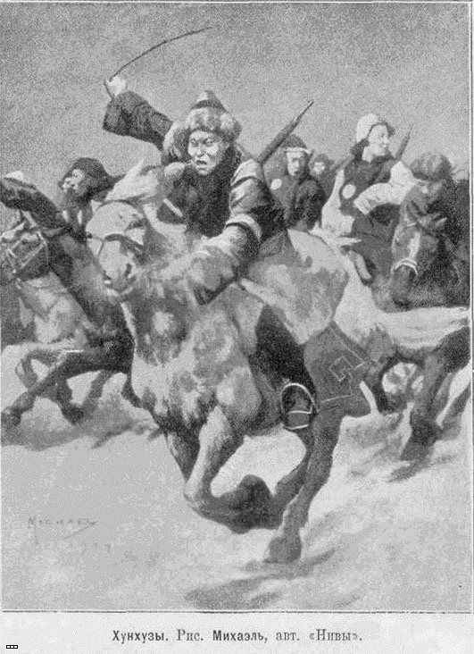

Интересная подборка фотографий о китайских бандитах http://vchae.com/hunhuzyi-internatsionalnaya-mafiya-manchzhurii/ начала XX века.
Хунхузы.
"Хунхуз"
О жене и матери забыл,
Маузер прикладистый добыл
И, тугие плечи оголя
Вышел за околицу, в поля.
Те же джунгли этот гаолян,
Только без озёр и без полян.
Здесь на свист хунхуза - за версту
Свистом отзывается хунхуз.
Было много пищи и добра,
Были добрые Маузера,
Но под осень, кочки оголя,
Сняли косы пышный гаолян.
Далеко до сопок и тайги.
Наседали сильные враги,
И горнист с серебряной трубой
Правильно развёртывает бой.
И хунхуза, сдавшегося в плен,
Чьи-то руки подняли с колен,
Связанного бросили в тюрьму,
Отрубили голову ему.
И на длинной жерди голова
Не жива была и не мертва.
И над ней кружилось вороньё:
Птицы ссорились из-за неё.
Арсений Несмелов, 1938 год

http://orientalist-v.livejournal.com/1621146.html - цинк
Плюс еще рекомендую несколько фото-подборок у автора:
1. Творцы китайского экономического чуда http://orientalist-v.livejournal.com/1617379.html
2. Экспедиционный отряд http://orientalist-v.livejournal.com/1619654.html
3. Красная звезда над Китаем http://orientalist-v.livejournal.com/1609103.html
4. Интервенция в Манчжурию http://orientalist-v.livejournal.com/1607069.html
5. В притоне http://orientalist-v.livejournal.com/1595574.html
Да и помимо этих материалов в этом блоге вы найдете немало интересного на тему истории Дальнего Востока и современных вооруженных сил дальневосточных и среднеазиатских государств.